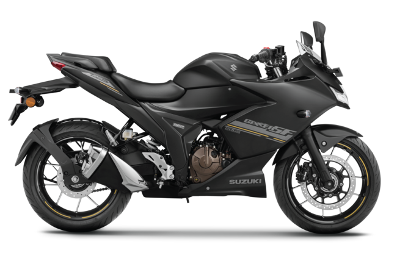
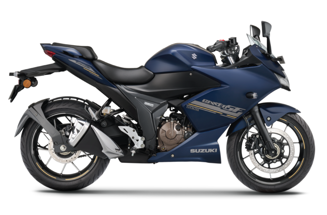

Suzuki Gixxer SF 250
₹ 1,91,000
Our Company is introducing a new Bike in 2023 which is Suzuki-Gixxer-SF-250. You can select the color of your bike which you want. The Suzuki Gixxer SF 250 is powered by 249cc BS6 engine which develops a power of 26.13 bhp and a torque of 22.2 Nm. With both front and rear disc brakes, Suzuki Gixxer SF 250 comes up with anti-locking braking system. This Gixxer SF 250 bike weighs 161 kg and has a fuel tank capacity of 12 liters.
Perchase Now Features